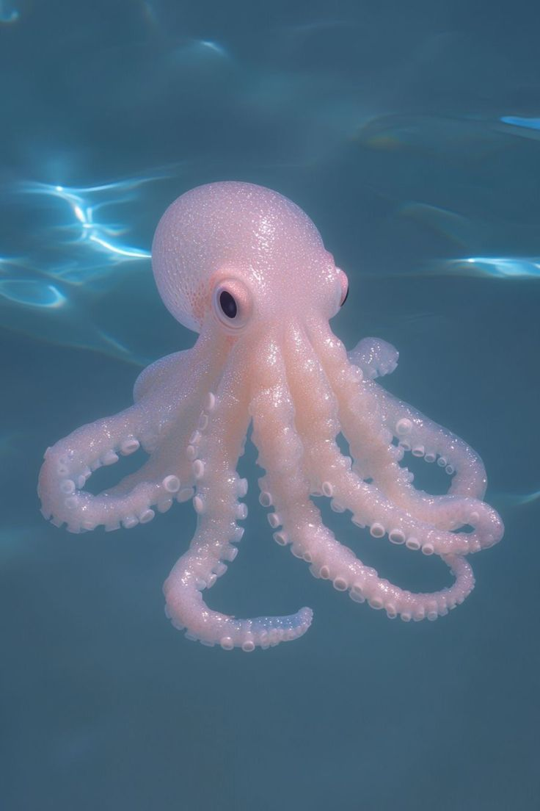
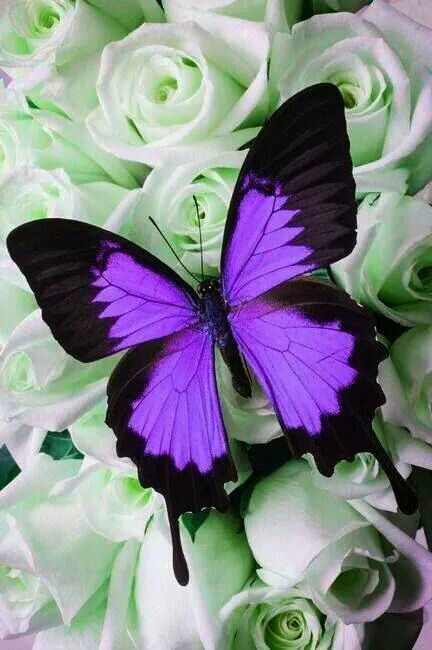
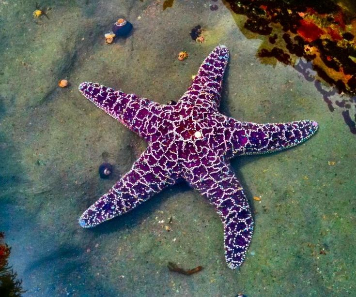
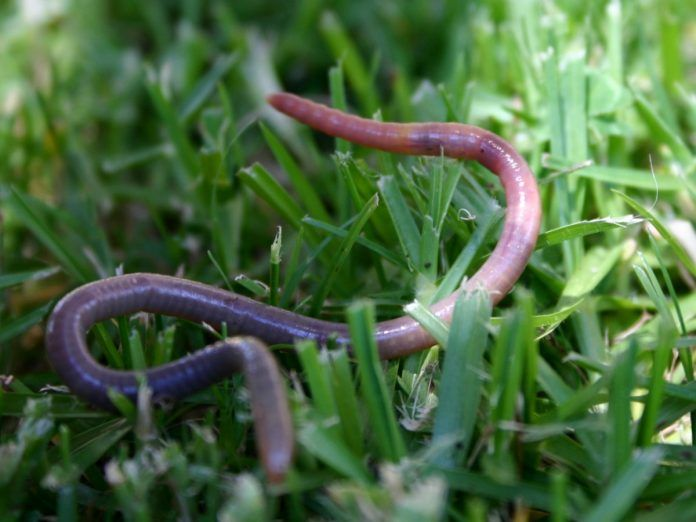

Medusas
Animales mayormente acuáticos y de cuerpos traslúcidos blandos, como las medusas y pólipos.
Los invertebrados son animales que carecen de columna vertebral y de esqueleto interno óseo articulado. ¡Conoce su fantástica diversidad!
Animales mayormente acuáticos y de cuerpos traslúcidos blandos, como las medusas y pólipos.

Poseen un cuerpo blando protegido en ocasiones por una concha calcárea, como los pulpos y almejas.

Cuentan con un exoesqueleto de quitina y apéndices articulados, como los insectos y arácnidos.

Habitantes marinos que presentan una simetría pentarradial y piel espinosa, como los erizos.

Invertebrados de cuerpo cilíndrico segmentados en característicos anillos, como las lombrices.
A pesar de no contar con un soporte óseo central, los invertebrados componen más del 95% de la fauna de todo el planeta, poblando exitosamente entornos aéreos, terrestres y las profundidades del océano.